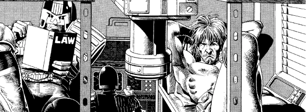

A Mega-City punk that unusually got hired by the Justice Department on a suicide mission to cross The Cursed Earth.
Art by Brian Bolland
| Story Title | Parts | Pages | w indicates a wraparound coverCovers | Year(s) | Issues | Writer | Artist | Colourist | Letterer |
|---|---|---|---|---|---|---|---|---|---|
From Judge Dredd[The Mega-City 5000] | 2 | 9 | 0 | 1977 | 40-41 | John Wagner | 1: Bill Ward 2: Brian Bolland various | [b&w] | Tony Jacob |
From Judge Dredd | The Cursed EarthInto the Darkness | 1 | 7 | 0 | 1978 | 62 | Pat Mills | Mike McMahon | <-- pp1-2, [b&w] | Tom Frame |
From Judge Dredd | The Cursed EarthThe Devil's Lapdogs | 2 | 13 | 63: Mike McMahon 1 | 1978 | 63-64 | Pat Mills | Mike McMahon | <-- pp1-2e., [b&w] | Tom Frame |
From Judge Dredd | The Cursed EarthThe Mutie Mountains | 1 | 7.5 | 0 | 1978 | 65 | Pat Mills | Brian Bolland | <-- pp1-2, [b&w] | Tom Frame |
From Judge Dredd | The Cursed EarthDark Autumn | 1 | 7 | Mike McMahon 1 | 1978 | 66 | Pat Mills | Mike McMahon | <-- pp1-2, [b&w] | Tom Frame |
From Judge Dredd | The Cursed EarthNight of the Vampire | 1 | 7 | 0 | 1978 | 67 | Pat Mills | Mike McMahon | <-- pp1-2, [b&w] | Tom Frame |
From Judge Dredd | The Cursed EarthThe Sleeper Awakes | 1 | 7 | 0 | 1978 | 68 | Pat Mills | Mike McMahon | <-- pp1-2, [b&w] | Tom Frame |
From Judge Dredd | The Cursed EarthThe Slay-Riders | 1 | 7 | Mike McMahon 1 | 1978 | 69 | Pat Mills | Brian Bolland | <-- pp1-2, [b&w] | Tom Frame |
From Judge Dredd | The Cursed EarthRequiem for an Alien | 1 | 7 | 0 | 1978 | 70 | Pat Mills | Brian Bolland | <-- pp1-2, [b&w] | Tom Frame |
From Judge Dredd | The Cursed EarthBattle of the Burger Barons | 1 | 7 | 0 | 1978 | 71 | Pat Mills | Mike McMahon | <-- pp1-2, [b&w] | Tom Frame |
From Judge Dredd | The Cursed EarthBurger Law | 1 | 7 | Mike McMahon 1 | 1978 | 72 | John Wagner | Mike McMahon | <-- pp1-2, [b&w] | Tom Frame |
From Judge Dredd | The Cursed EarthThe Coming of Satanus | 1 | 7 | 0 | 1978 | 73 | Pat Mills | Mike McMahon | <-- pp1-2, [b&w] | Tom Frame |
From Judge Dredd | The Cursed EarthFor Whom the Bell Tolls | 1 | 7 | Mike McMahon 1 | 1978 | 74 | Pat Mills | Mike McMahon | <-- pp1-2, [b&w] | Tom Frame |
From Judge Dredd | The Cursed EarthPicnic at Black Rock | 1 | 6 | 0 | 1978 | 75 | Pat Mills | Mike McMahon | <-- p1, [b&w] | Tom Frame |
From Judge Dredd | The Cursed EarthGiants Aren't Gentlemen | 1 | 6 | Brian Bolland 1 | 1978 | 77 | Chris Lowder | Brian Bolland | <-- p1, [b&w] | Tom Frame |
From Judge Dredd | The Cursed EarthSoul Food | 1 | 6 | 0 | 1978 | 78 | Chris Lowder | Brian Bolland | <-- p1, [b&w] | Tom Frame |
From Judge Dredd | The Cursed EarthLoser's Leap | 1 | 6 | Mike McMahon 1 | 1978 | 79 | John Wagner | Mike McMahon | <-- p1, [b&w] | John Aldrich |
From Judge Dredd | The Cursed EarthThe God Judge | 1 | 6 | 0 | 1978 | 80 | John Wagner | Mike McMahon | <-- p1, [b&w] | John Aldrich |
From Judge Dredd | The Cursed EarthTweak's Story | 2 | 14 | 82: Brian Bolland 1 | 1978 | 81-82 | Pat Mills | Brian Bolland | <-- pp1-2, [b&w] | Peter Knight |
From Judge Dredd | The Cursed EarthLegion of the Damned | 1 | 7 | Mike McMahon 1 | 1978 | 83 | Pat Mills | Mike McMahon | <-- pp1-2, [b&w] | John Aldrich |
From Judge Dredd | The Cursed EarthDredd's Last Stand | 1 | 8 | 0 | 1978 | 84 | Pat Mills | Mike McMahon | <-- pp1-2, [b&w] | Peter Knight |
| year | episodes | pages |
| 1977 | 2 | 9 |
| 1978 | 22 | 149.5 |
| 1979 | 0 | 0 |
| 1980 | 0 | 0 |
| 1981 | 0 | 0 |
| 1982 | 0 | 0 |
| 1983 | 0 | 0 |
| 1984 | 0 | 0 |
| 1985 | 0 | 0 |
| 1986 | 0 | 0 |
| 1987 | 0 | 0 |
| 1988 | 0 | 0 |
| 1989 | 0 | 0 |
| 1990 | 0 | 0 |
| 1991 | 0 | 0 |
| 1992 | 0 | 0 |
| 1993 | 0 | 0 |
| 1994 | 0 | 0 |
| 1995 | 0 | 0 |
| 1996 | 0 | 0 |
| 1997 | 0 | 0 |